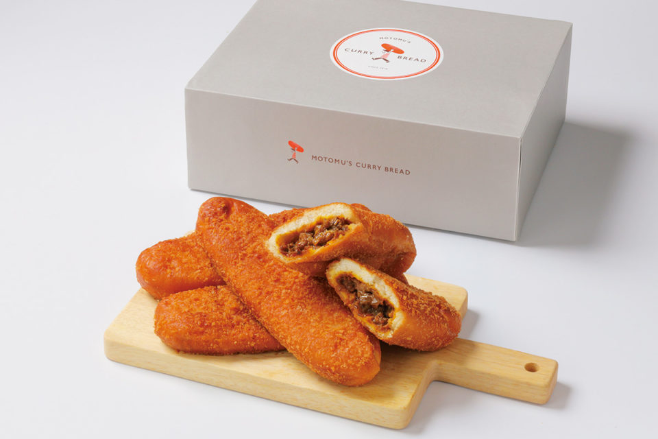

Префектура Окинава · остров Сэнага · еда
Motomu's Curry Bread: карри-пан с вагю, рождённый в Токио и выросший на Окинаве

Карри-пан, жареный пирожок с карри внутри, в Японии продают почти в каждой пекарне. У Motomu's Curry Bread своя история: рецепт приехал из Токио, а прославился пирожок на Окинаве.
История
Из Цукидзи на остров Сэнага
Начинка этого карри-пана пришла из ресторана «Цукидзи якинику Мотому», где в токийском районе Цукидзи жарят мясо на гриле. Одно из самых любимых блюд там карри с говяжьими сухожилиями, и хозяевам захотелось, чтобы его попробовало как можно больше людей. Так появилась идея завернуть карри в тесто.
В декабре 2018 года пирожки впервые продавали на рождественской ярмарке на Окинаве, всего несколько дней. Их раскупили мгновенно, и выпечка быстро стала известной. В августе 2019 года на острове Сэнага, у самого аэропорта Наха, в торговом комплексе Senagajima Umikaji Terrace открылся первый постоянный магазин. Место выбрали потому, что сюда приезжают люди со всей Японии и из других стран. Пирожки полюбили и местные жители, и туристы: в 2020 году здесь продавали около 2000 штук в день.
Вкус
Вагю и сухожилия под хрустящей корочкой
Для начинки берут отборную чёрную японскую говядину высшей категории A5 и тушат её вместе с сухожилиями в фирменном карри. Тесто получается лёгким и хрустящим, а внутри соединяются насыщенный вкус вагю, яркий аромат специй и мягкая сладость разваренных сухожилий.
Долгое время попробовать этот карри-пан можно было только на Окинаве. В 2020 году магазин начал принимать заказы через интернет, и к наборам из 4 и 8 пирожков добавился набор из 12 штук, который выходит выгоднее. Пирожок можно разогреть дома и вспомнить синее небо и море острова.
Motomu's Curry Bread
- Цены / Вход
- в 2020 году набор из 4 штук 1500 иен, из 8 штук 2980 иен, из 12 штук 4500 иен
- Как добраться
- магазин в Senagajima Umikaji Terrace на острове Сэнага (город Томигусуку), заказы через интернет-магазин
- Телефон
- +81 3-6261-7404 (компания And Foods With)